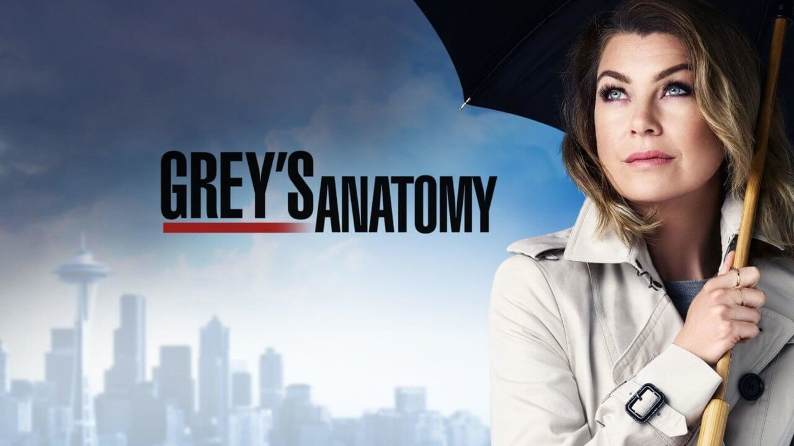

Grey’s Anatomy é considerada uma das maiores séries americanas dos últimos tempos.
Há anos essa série é a preferida de seus incontáveis fãs. Talvez por ser recheadas de personagens femininas e, cada uma, com suas histórias, dramas, qualidades e defeitos, talvez por apresentar a vida dos médicos, residentes e pacientes do hospital, talvez por ser uma narrativa que consegue tocar fundo nas emoções dos telespectadores e, por último, talvez por ter Seattle Grace Hospital como cenário e o maior personagem das quatorze temporadas.
Para muitos a série é incrível e maravilhosa, especialmente, por levar à tela discussões que envolvem a mulher como um todo no que tange a direito ao aborto, diferenças salarias e, sobretudo, o direto de ser mulher e ter liberdade
A protagonista da série é Meredith Grey, cuja mãe, uma famosa cirurgiã, teve de ser afastada da medicina em razão de ter adquirido o mal Alzheimer.
Meredith não tem ligação forte com o pai, pelo fato de o patriarca ter se afastado da família quando ainda era uma criança.
A narrativa inicia-se quando a médica Meredith Grey, como tantas mulheres que têm a vida cheia de conflitos se apaixona por Derek, o neurocirurgião do hospital.
É possível perceber que a cada episódio existe um novo caso médico e, junto a isso, o expectador acompanha a vida dos profissionais do Grey Sloan Memorial Hospital viverem questões relacionadas tanto às suas carreiras e quanto às suas vidas pessoais.

Mostra como é a vida dos médicos como internos e seus dramas, entre eles o de Meredith e seus esforços de para manter em segredo seu relacionamento com o Dr. Shepherd, o Alzheimer de sua mãe e a rivalidade de Burke e Shepherd pela direção do hospital.
De 25 de setembro de 2005 a 15 de Maio de 2006.
Cheia de ação, essa temporada causou impacto, principalmente pela morte de Denny, as dificuldades de Preston e Yang, além da doença do pai de George e os altos e baixos do relacionamento de Derek.
Contou com apenas 17 episódios e um dos episódios, “Piece of My Heart”, teve a visita de Kate Walsh ao hospital.
Essa temporada de Grey’s Anatomy estreou no dia 25 de setembro nos Estados Unidos e chegou ao Brasil em Fevereiro de 2009.
Estreou nos Estados Unidos no dia 24 de setembro de 2009. O episódio duplo começou a ser gravado a 15 de julho de 2009.
Essa temporada foi exibida de 14 de maio e retornou em 23 de setembro de 2010.
A estreia dessa temporada nos Estados Unidos foi em 22 de Setembro de 2011, na ABC.
O que aconteceu de marcante nessa temporada foi que os médicos do Seattle Grace tiveram que encarar as consequências da queda do avião na última temporada, e os destinos de Meredith, Derek, Cristina, Mark e Arizona ficaram abertos.
Nos episódios dessa temporada, os médicos lidam com a devastação deixada pela tempestade. Um enorme deslizamento de terra em Seattle prejudica um grupo de socorristas e cidadãos.
O décimo primeiro ano dessa série estreou dia 25 de Setembro de 2014 nos Estados Unidos e dia 6 de Outubro de 2014 no Brasil.
Nos episódios dessa temporada os fãs veem a protagonista Meredith Grey lidando ainda com a sua recém-viuvez. Ela divide a casa com sua meia-irmã Maggie Pierce, e sua cunhada Amelia Shepherd agora, e, todas estão juntas, na antiga casa da mãe de Meredith.
No Grey Sloan Memorial Hospital, Miranda Bailey tem dificuldades em lidar com o cargo de chefe de cirurgia.
Callie traz para dentro da casa de Meredith, uma das médicas que atenderam Derek antes de morrer, causando assim mal-estar entre Meredith e Amelia.
Jackson e April se esforçam para chegarem a um entendimento. Nesse meio tempo, Edwards finalmente encontra um novo amor, mas mesmo assim esse encontro é rápido.
Já, no final da temporada, um terrível segredo é revelado sobre o passado de Jo.
Por último está Alex que não termina bem a temporada.
Estreou no dia 22 de setembro de 2016.
Neste ano a série foi renovada. Em primeiro lugar, foi confirmado por Jerrika Hinton que a personagem Stephanie Edwards não voltará para a série e Kim Raver voltará como a Dra. Teddy Altman.
Essa temporada inicia-se com Meredith e a equipe completamente direcionados em ajudar a irmã de Owen, depois que houve seu retorno inesperado.
Nesse meio tempo, Amelia tenta lidar com um paciente.
Miranda Bailey é forçada a dar ao Grey Sloan um facelift, ou seja, um tratamento completo para corrigir os problemas faciais que surgiram após o incêndio. Com isso, foi preciso que alguns rostos fossem apresentados aos médicos, o que de alguma forma esquentou as coisas no hospital.